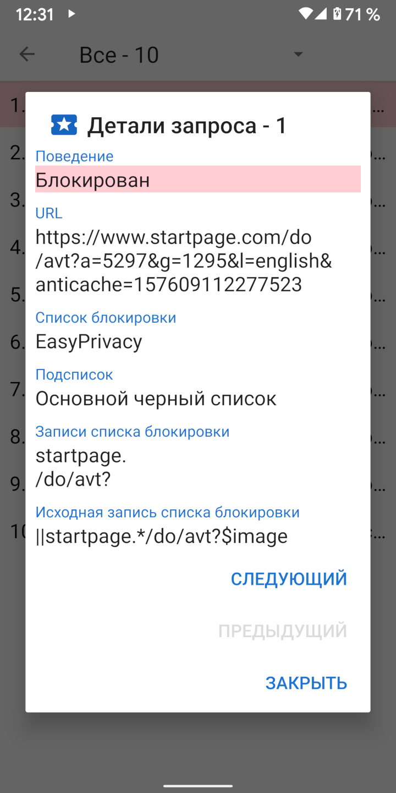

При загрузке URL-адреса обычно происходит ряд запросов ресурсов для CCS, JavaScript, изображений и других файлов. Сведения об этих запросах можно просмотреть в активности запросов. В навигационном меню имеется ссылка на активность запросов, а также показано, сколько запросов было заблокировано. При нажатии на запрос отображаются сведения о том, почему он был разрешен или заблокирован.
Clear Browser включает в себя четыре распространенных списка блокировки, основанных на синтаксисе Adblock: EasyList, EasyPrivacy, Fanboy’s Annoyance List, и Fanboy’s Social Blocking List. Эти списки блокировки обрабатываются Clear Browser в следующих 22 подсписках, которые проверяют запросы ресурсов в указанном порядке.
Исходные списки проверяются на начало URL-адреса. Окончательные списки проверяются на конец URL-адреса. Списки доменов проверяют только определенные домены. Сторонние списки применяются только в том случае, если корневой домен запроса отличается от корневого домена основного URL-адреса. Списки регулярных выражений следуют за синтаксисом регулярных выражений. Каждый элемент подсписка имеет одну или несколько записей. В случае подсписков домена, запрос ресурса проверяется только в отношении элемента, если первая запись соответствует домену основного URL-адреса.
Из-за ограничений в Android WebView, а также для ускорения обработки запросов, в Clear Browser реализована упрощенная интерпретация синтаксиса Adblock. Иногда это может привести к ложным срабатываниям, когда ресурсы разрешаются или блокируются способами, которые не были предназначены для исходной записи. Более подробное описание способа обработки записей списка блокировки доступно на stoutner.com.
В Clear Browser встроено три дополнительных списка блокировки.
UltraList и UltraPrivacy
блокируют рекламу и трекеры, которых нет в EasyList и EasyPrivacy. Третий блокирует все сторонние запросы.
Например, если www.website.com загружает изображение с сайта images.website.com,
запрос не будет считаться сторонним и не будет заблокирован, так как они оба используют один и тот же базовый домен website.com.
Блокировка всех сторонних запросов увеличивает конфиденциальность, но этот список блокировки по умолчанию отключен, поскольку он ломает большое количество веб-сайтов.